| Date | Version | Etat | Objet | Rédacteur | Validateur |
|---|---|---|---|---|---|
06/01/2021 |
1.0 |
Validé |
Document |
Frédéric Gadaut |
Nicolas Félix |
2. Administration
2.1. Création d’une interface Parapheur
Depuis l’application adminAIRS, veuillez créer un type d’interface Parapheur
|
Cette catégorie n’est disponible qu’en mode expert. |
adminAIRS, Types d’interface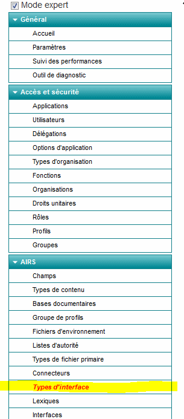
|
ATTENTION le code de cette interface doit être PARAPHEUR. 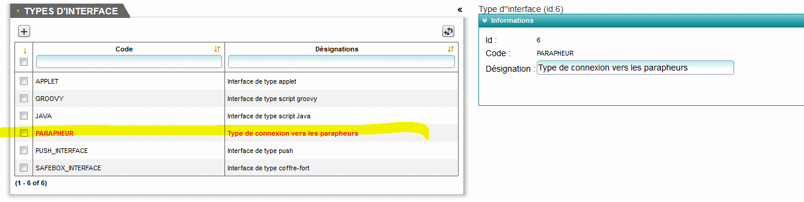 |
2.2. Création d’un connecteur
Toujours depuis l’application adminAIRS, veuillez créer un connecteur
adminAIRS, Connecteurs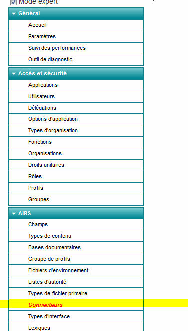
|
ATTENTION les variables sont différents selon le parapheur utilisé. |
adminAIRS, Connecteur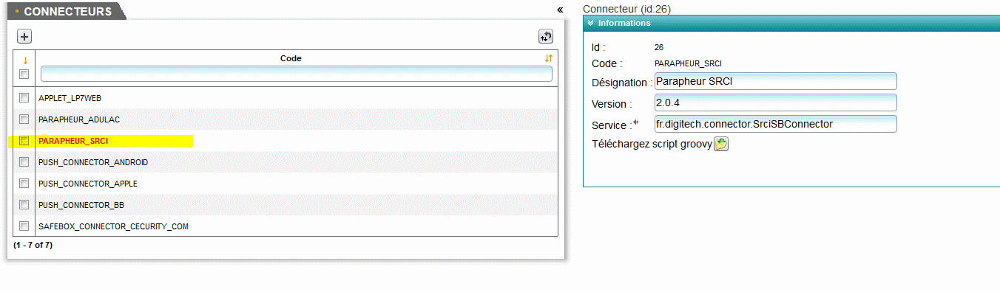
Liste des services connecteur en fonction du parapheur externe :
-
SRCI: fr.digitech.connector.SrciSBConnector (dernière version 2.0.9) -
MT Software: fr.digitech.connector.mtsoftware.MTSoftwareConnector (version 1.0.7) -
Adullact: fr.digitech.connector.adullact.AdullactSBConnector (version 2.0.3) -
Pastell: fr.digitech.connector.sb.pastell.PastellSbConnector (version 2.0.8)
2.3. Création d’une interface
Depuis l’application adminAIRS, sélectionnez le menu Interfaces
adminAIRS, Menu Interfaces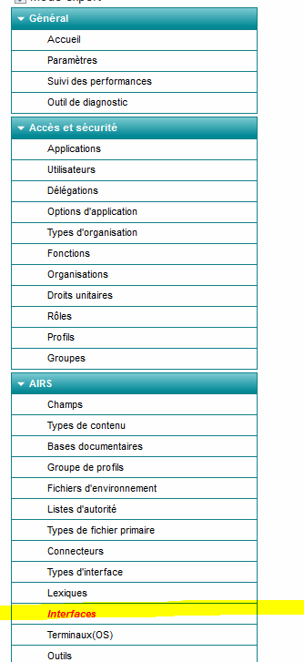
adminAIRS, Interfaces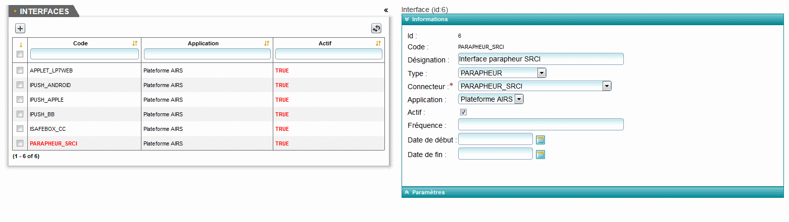
-
Type de l’interface : PARAPHEUR
-
Connecteur de l’interface : Le connecteur créé précédemment.
-
Application : Plateforme AIRS
2.3.1. Paramétrage de l’interface
|
Les paramètres rouge sont obligatoires |
| Paramètre | Type | Description |
|---|---|---|
IN_DIRECTORY |
Chaine |
Répertoire d’export des dossiers du parapheur |
OUT_DIRECTORY |
Chaine |
Répertoire de retour des dossiers du parapheur |
HTTP_USERNAME |
Chaine |
Nom d’utilisateur déclaré pour le parapheur. (Fournis par le client) |
HTTP_PASWORD |
Chaine |
Password associé au nom d’utilisateur. (Fournis par le client) |
ENDPOINT_ADDRESS |
Chaine |
Adresse de connexion aux services du parapheur (Fournis par l’éditeur du parapheur) |
TRUSTSTORE_TYPE |
Chaine |
Type du truststore |
TRUSTSTORE |
Chaine |
Chemin vers le truststore |
TRUSTSTORE_PASSWORD |
Chaine |
Mot de passe pour le truststore |
KEYSTORE_TYPE |
Chaine |
Type du keystore |
KEYSTORE |
Chaine |
Chemin vers le keystore |
KEYSTORE_PASSWORD |
Chaine |
Mot de passe pour le keystore |
PROXY_URL |
Chaine |
Adresse du serveur proxy |
PROXY_PORT |
Chaine |
Port du serveur proxy |
CIRCUIT_NAME |
Chaine |
Nom du circuit dans le parapheur (Ce paramètre peut-être surchargé cf 7.2) |
MODEL_NAME |
Chaine |
Nom du modèle (niveau racine de l’arborescence du parapheur) (Ce paramètre peut-être surchargé cf 7.1) |
SESSION_TIMEOUT |
Chaine |
Timeout (en millisecondes) de la session |
FILENAME_MAX_SIZE |
Chaine |
Nombre de caractères maximum du nom du fichier principal |
SSL_MODE |
Chaine |
1 si mode SSL 0 sinon. Si 0 les paramètres concernant les keystore et truststore sont ignorés |
ORGANISATION_ID |
Chaine |
Identifiant de l’organisation (Fournit par le client) |
LIMIT_DATE |
Chaine |
Durée limite pour la validation |
PARAPHEUR_CANCEL_MESSAGE |
Chaine |
Message d’annulation d’un dossier dans le parapheur |
SIREN |
Chaine |
Numéro siren |
|
Le script param_interface_parapheur.sql permet de créer tous ces paramètres. |
|
Tous les paramètres listés ci-dessous ne sont évidemment pas nécessaires à tous les connecteurs. |
2.4. Droits complémentaires AIRS Dossier
Les droits suivants doivent être associés à un profil d’utilisateur afin d’accéder aux actions correspondantes.
| Droit | Description |
|---|---|
DOSSIERS_SB_SEND |
|
DOSSIERS_SB_RETRIEVE |
|
DOSSIERS_SB_CANCEL |
|
DOSSIERS_SB_SHOW_HISTO |
|
2.5. Activation de la fonctionnalité Parapheur dans AIRS Dossier
Editer le fichier config.properties pour y définir les propriétés suivantes:
| Clé | Valeur | Description |
|---|---|---|
signBook.enabled |
true |
Activation de la fonctionnalité |
signBook.autoRetrieve.folder.enabled |
true |
Activation de la relève automatique des documents |
signBook.autoRetrive.folder.JobInterval |
1800000 (30 minutes) |
Fréquence de la relève des documents dans le |
|
A partir de la verison 7.2 de |
3. AIRS Dossier
3.1. Scripts Groovy
3.1.1. Script d’initialisation
Ce script est appelé avant l’envoi d’un document vers le Parapheur.
|
Le code de ce script doit impérativement être SBRuleScript et de type ConnectorPropertiesInitializer. |
Les données disponibles en entrée sont :
-
scriptLogger: le _logger (Classe
org.slf4j.Logger) -
userContext: le _user context (Classe
com.digitech.dossier.common.model.backend.UserCoreContext) -
document: le _document Airs qui contient la pièce jointe envoyée vers le
Parapheur. (Classcom.digitech.dossier.common.model.backend.airs.IDocument) -
attachment: la _pièce jointe envoyée vers le
Parapheur. (Classcom.digitech.dossier.common.model.backend.airs.IAttachment) -
flowModel: le _code du flux auquel appartient le document (Class
java.lang.String)
Dans ce script, deux maps vont pouvoir être renseignées:
-
Une map de propriétés qui vont permettre de modifier les valeurs par défaut de certaines informations utilisées pour l’envoi vers le
Parapheur.-
DEPTH_0: Nom du modèle: niveau racine de l’arborescence du
Parapheur. (cf 7.1) -
DEPTH_1: circuit de validation dans le paraheur (cf 7.2)
-
external_folder.title: Titre de l’envoi
-
external_folder.external_id: Identifiant de l’envoi. Valeur par défaut si non renseigné: [ID du document AIRS][SIREN]. La valeur [SIREN] est renseignée si elle est trouvée dans les paramètres de l’interface
-
ADD_MARK_TO_PDF: Ajout des marques sur la pièce jointe.
-
Les données renseignées peuvent être en dur, ou le nom d’un champ du document dans ce cas MODEL_NAME=%[FIELD_CODE]%
resultValue.getPropertiesMap().put(DossierExternalFolderConstants.EXTERNALFOLDER_TITLE, "%N_CHRONO%")-
Et une map de Metadatas, ces informations sont transmises directement au
Parapheur.
resultValue.getMetadatasMap().put(MetadataConstant.OBJECT, "%C_OBJET%")3.1.2. Scripts déclenchés sur une action
Des scripts peuvent être appelés avant ou après une action liée au Parapheur. La configuration des appels se fait via le adminAIRS, dans la section Gestion des
actions déclenchables de la configuration des vues.
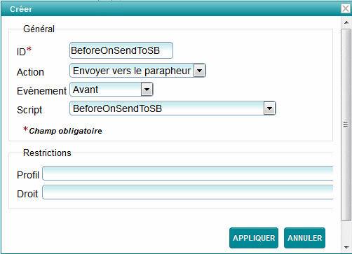
En mode édition, l’on peut paramétrer l’appel à un script avant et après l’envoi d’un document vers le Parapheur.
Et en mode consultation, l’on peut paramétrer l’appel à un script après la réception de la validation ou le rejet du document dans le Parapheur et après
l’annulation de la demande
3.2. Paramétrage du nom du modèle et du circuit
3.2.1. Nom du modèle (niveau racine de l’arborescence du Parapheur)
Le Nom du modèle est d’abord récupéré dans la map des propriétés issus du script groovy initialisation :
resultValue.getPropertiesMap().put(EnumDepth.DEPTH_0.name(), [MODEL_NAME]) // here set the model[MODEL_NAME] peut être une valeur en dur, ou le nom d’un champ du document dans ce cas MODEL_NAME=%[FIELD_CODE]%.
Si la valeur n’a pas pu être récupérée dans cette map, alors on prend la valeur issue des paramètres de l’interface, dans la proprièté MODEL_NAME : Cette valeur peut être une valeur en dur ou le nom d’un champ du document dans ce cas MODEL_NAME=%[FIELD_CODE]%
3.2.2. Nom du circuit
Le circuit de validation dans le Parapheur peut-être défini de différente manière:
-
Définir le nom d’une liste d’autorité qui contient les différentes valeurs possibles.
menu:adminAIRS[Gestionnaire de flux > Modifier le flux]
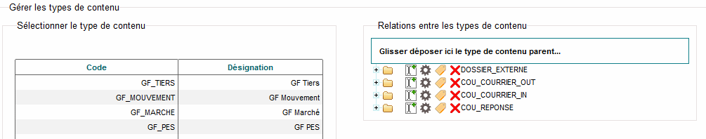
Dans la partie où sont définis les type de contenu gérés par le flux, en cliquant sur l’icône , l’on peut choisir un champ de type liste
d’autorité qui contient le circuit de validation pour le Parapheur:
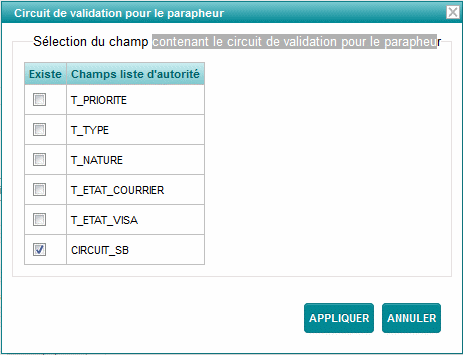
Si ce paramétrage est effectué, alors une liste déroulante sera affichée dans l’onglet Parapheur pour choisir cette valeur:
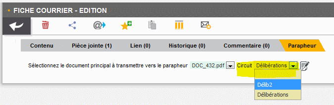
-
Renseigner le nom du circuit via le script initialisation
resultValue.getPropertiesMap().put(EnumDepth.DEPTH_1.name(), CIRCUIT_NAME) // here set the natureCIRCUIT_NAME peut être une valeur en dur, ou contenir le nom d’un champ du document dans ce cas CIRCUIT_NAME=%[FIELD_CODE]%
-
Récupération du nom du circuit dans les paramètres de l’interface
La valeur est récupérée dans la propriétés CIRCUIT_NAME : la valeur peut être une valeur en dur ou contenir le nom d’un champ du document dans ce cas CIRCUIT_NAME=%[FIELD_CODE]%
3.2.3. Accès aux fonctions Parapheur
L’accès aux fonctions Parapheur se fait depuis la vue document:
En plus du droit DOSSIERS_SB_SEND que doit posséder l’utilisateur, l’envoi ne pourra être effectué que si le document est en mode Edition
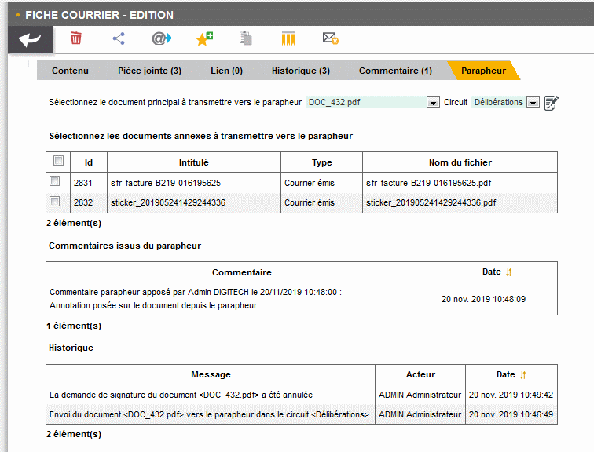
L’opérateur devra choisir la pièce principale à signer:
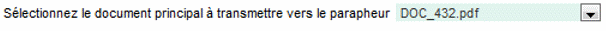
Le circuit de validation (en fonction du paramétrage mis en place)
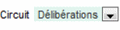
Si le document contient plusieurs pièces jointes, l’opérateur pourra sélectionner celle qu’il souhaite joindre en annexe à la demande
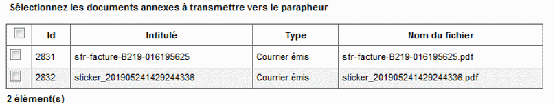
Une fois tous les éléments obligatoires positionnés, le bouton devient alors visible. Cliquez dessus pour envoyer le document vers le
Parapheur.
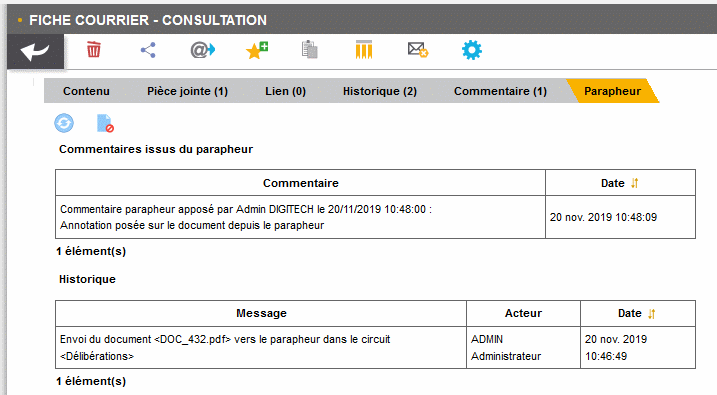
Une fois le document envoyé, la page se met à jour avec 2 nouveaux boutons :
-
: ce bouton va permettre d’interroger le
Parapheuret de récupérer le document s’il a été signé et/ou récupérer son état et les commentaires qui ont pu y être ajoutés. Ce bouton n’est actif que si l’utilisateur a le droit DOSSIERS_SB_RETRIEVE et si le document est en consultation.
Tableau listant les commentaires fait sur le document depuis le Parapheur:
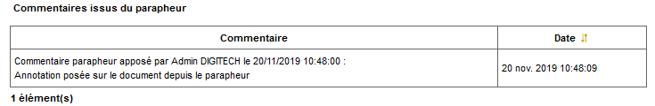
-
: ce bouton va permettre d’annuler la demande de signature. Ce bouton n’est actif que si l’utilisateur à le droit DOSSIERS_SB_CANCEL et si le document est en consultation.
Si l’utilisateur a le droit DOSSIERS_SB_SHOW_HISTO, il aura également accès à l’historique des actions liées au parapheur.